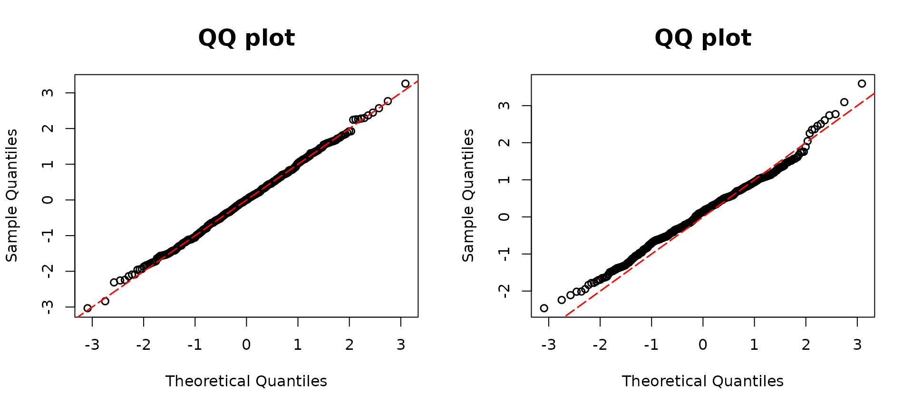

Semicontinuous outcome regression models
resid_semiconti() is used for calculating the DPIT
residuals for regression models with semicontinuous outcomes and drawing
corresponding QQ-plots. Specifically, a Tobit regression and a Tweedie
regression model are suitable models for resid_semiconti().
The suitable model objects are as follows:
- Tweedie,
glm(family= tweedie()) - Tobit(VGAM),
VGAM::vglm() - Tobit(AER),
AER::tobit()
## Tweedie model
library(assessor)
library(tweedie)
library(statmod)
n <- 500
x11 <- rnorm(n)
x12 <- rnorm(n)
beta0 <- 5
beta1 <- 1
beta2 <- 1
lambda1 <- exp(beta0 + beta1 * x11 + beta2 * x12)
y1 <- rtweedie(n, mu = lambda1, xi = 1.6, phi = 10)
# True model
model1 <-
glm(y1 ~ x11 + x12,
family = tweedie(var.power = 1.6, link.power = 0)
)
# missing covariate
model2 <- glm(y1 ~ x11 ,
family = tweedie(var.power = 1.6, link.power = 0)
)
par(mfrow=c(1,2))
resid1 <- resid_semiconti(model1)
resid2 <- resid_semiconti(model2)
## Tobit regression model
library(VGAM)
beta13 <- 1
beta14 <- -3
beta15 <- 3
set.seed(1234)
x11 <- runif(n)
x12 <- runif(n)
lambda1 <- beta13 + beta14 * x11 + beta15 * x12
sd0 <- 0.3
yun <- rnorm(n, mean = lambda1, sd = sd0)
y <- ifelse(yun >= 0, yun, 0)
# Using VGAM package
# True model
fit1 <- vglm(formula = y ~ x11 + x12, tobit(Upper = Inf, Lower = 0, lmu = "identitylink"))
# Missing covariate
fit1miss <- vglm(formula = y ~ x11, tobit(Upper = Inf, Lower = 0, lmu = "identitylink"))
par(mfrow=c(1,2))
resid1 <- resid_semiconti(fit1, plot = TRUE)
resid2 <- resid_semiconti(fit1miss, plot = TRUE)
# Using AER package
library(AER)
# True model
fit2 <- tobit(y ~ x11 + x12, left = 0, right = Inf, dist = "gaussian")
# Missing covariate
par(mfrow=c(1,2))
fit2miss <- tobit(y ~ x11, left = 0, right = Inf, dist = "gaussian")
reisd1 <- resid_semiconti(fit2, plot = TRUE)
resid2 <- resid_semiconti(fit2miss, plot = TRUE)